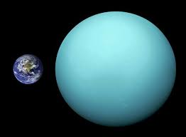

Urano é um planeta gasoso do Sistema Solar, o terceiro maior e o sétimo mais próximo do Sol. É conhecido como "gigante de gelo".
A gravidade do planeta Urano é de cerca de 8,87m/s².
Assim como os outros planetas do Sistema Solar,Urano também possui um conjunto de satélites naturais, também chamados de luas. Na atualidade, são conhecidas 27 luas em Urano, sendo a última identificada em 1948, ela recebeu o nome de Miranda. Os principais satélites são: Miranda,Ariel,Umbriel,Titania,Oberon e Titânia.
Seu diâmetro é de 50.724 Km, e é quatro vezes maior que a Terra. Sua área é de "8.083.079.690 km²"
A atmosfera de Urano, como aquela dos gigantes gasosos maiores Júpiter e Saturno, é composta primariamente de hidrogênio e hélio. A parte mais profunda da atmosfera é rica em voláteis (apelidados "gelos") tais como água, amônia e metano.O metano na alta atmosfera do planeta absorve a luz vermelha, dando a Urano a sua cor azul-esverdeada.
O planeta Urano só foi visitado uma vez, em 1986,durante o sobrevoo realizado pela sonda Voyager.